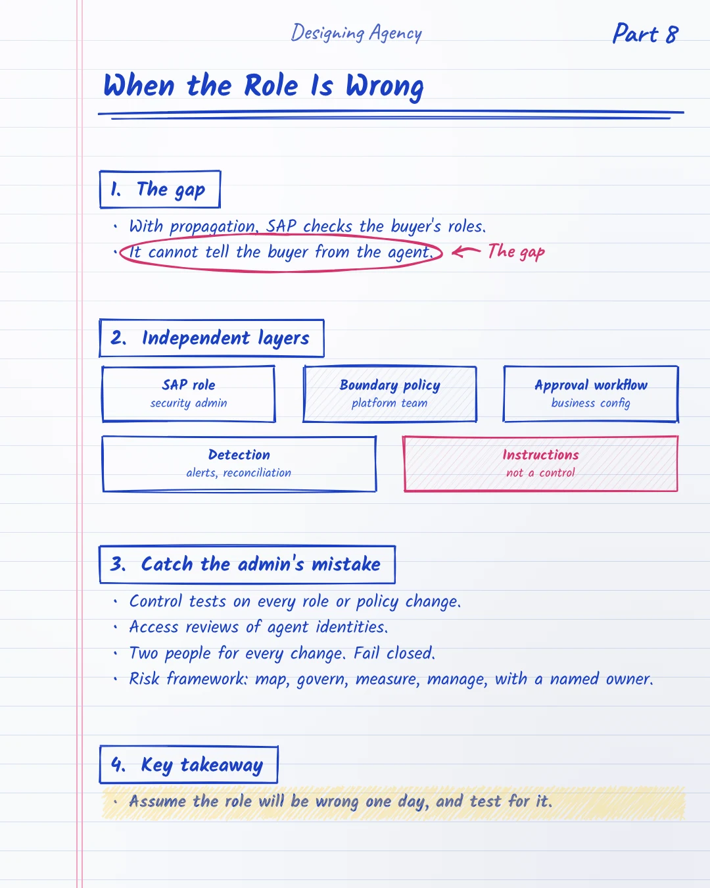

Blog / AI agents and governance / Designing Agency
When the role is wrong
Defence in depth for agent authority, and what a risk framework is actually for
In Part 7's trace, the agent tried to release a purchase order and was refused. Look closely at what refused it. The system of record would have allowed the release: the buyer may release small orders, and the agent was acting as the buyer. The refusal came from a check that knew an agent was asking.
That is not an accident of the example. When an agent acts under a person's identity (Part 3), a system that checks only that person's roles cannot tell the person from the agent acting for them. So the question every design has to answer is: if one control is missing or misconfigured, what else stops the agent?
Instructions are not a control
The first instinct is to tell the agent: never release orders. Do it, but do not count it as protection. A model can be argued out of its instructions. In Uchi Uchibeke's live test, social engineering succeeded against a model 74.6% of the time under a permissive policy, while attackers achieved 0% across 879 attempts when a restrictive policy was checked before every action, outside the model.1 Instructions reduce accidental attempts. Controls stop deliberate ones.
Layers that fail independently
The property is that no single misconfiguration lets the agent commit. The usual way to get it is several layers, owned by different people and checked in different ways, so that one person's mistake does not open them all. Which layers exist, and where each runs, differs from one architecture to the next; this table describes them by what they do, not by product.
| Layer | Owner | What it stops | If it is misconfigured |
|---|---|---|---|
| Role of the executing identity | Security administration | The system of record refuses the release | The layers below still apply |
| A policy check that knows an agent is acting, wherever it runs | Platform or application team, under version control | The action never reaches the system of record | Review and control tests catch it |
| Approval rules | Business owners | Release needs an approval bound to the terms (Part 4) | A permissive default, unless tested |
| Detection: alerts and reconciliation | Operations or internal control | Any agent attempt at a forbidden step is flagged, allowed or not | Alerts nobody reads |
| Agent instructions | Prompt author | Most accidental attempts | Not a control |
The AI Safety Atlas explains why ownership matters. Defence in depth works when layers are genuinely independent; it weakens when they share a cause, for example when several defences use the same underlying model with different prompts.2 The same is true of people: three layers configured by one administrator in one afternoon are closer to one layer than three.
There is also a design choice in the first row. A dedicated identity for the agent lets the system's own roles restrict the agent directly, even where the buyer could release, but loses the requester's own limits. Acting under the requester's identity keeps those limits but leaves the agent distinction to another layer. Some platforms combine the two. Either way, some part of the system must know an agent is acting.
Catching the administrator's mistake
Assume the role will be wrong one day, and arrange to find out first.
- Control tests. Every change to roles or policy runs a negative test: the agent tries each forbidden action, and the test passes only if all are refused. Part 7's trace ends with one.
- Access reviews. List what each agent identity can effectively do, with the same access-review and segregation-of-duties analysis used for people.
- Two people for every change. Treat agent roles and policy as code. Netflix's advice for its ontology applies directly: version it, review it, test it, and let changes arrive as pull requests.3
- Fail closed. If a policy cannot be evaluated, the action is denied.1
What the risk framework is for
Controls do the stopping. A risk framework makes sure the controls exist, stay correct and have an owner. Berkeley's agentic AI profile is organised around the four functions of the NIST AI Risk Management Framework: govern, map, measure and manage.4 Applied to this one risk:
- Map. Record “agent releases an order without approval” in the risk register, with its causes, including “role misconfigured” and “policy missing”.
- Govern. Name the risk owner, and decide who may change agent roles and policy.
- Measure. Test the controls, not only the agent. Control tests, access reviews and alert counts are the evidence.
- Manage. Set the triggers that narrow the agent's authority (Part 6), and have the owner accept the remaining risk in writing.
The framework's real job is to turn “the administrator might get it wrong” from a surprise into an expected case, with a test that catches it.
The question this leaves open
Everything in this series checks who may act, when and on which version. None of it checks whether the proposal itself makes sense. Suppose the agent splits an order 50–50 between two supplier records that belong to the same parent company, under a policy that caps any supplier group at 60%. Every layer above would let it through, correctly authorised and sent exactly once. How would the system know the proposal broke purchasing policy?
That needs explicit knowledge of what a supplier, a group and a policy mean, and it is where the next series, Closing the Loop, begins.
Notes

Sources
- Uchi Uchibeke, Before the Tool Call: Deterministic Pre-Action Authorization for Autonomous AI Agents, arXiv preprint, March 2026.
- Markov Grey and Charbel-Raphaël Segerie, AI Safety Atlas, Strategies chapter.
- Netflix Technology Blog, Ontology-Driven Observability, October 2026.
- Nada Madkour and colleagues, UC Berkeley CLTC, Agentic AI Risk-Management Standards Profile, February 2026.